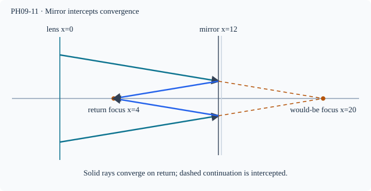

Prerequisite bridge
PH09-09, PH10-07
Before starting, identify the reference frame, directed rays, units and applicable geometric assumptions. Unbound prerequisites remain provisional.
Connected textbook foundation (preserved from PR #5)
12. Compound optical setups and the enrichment gate
A mirror used with another lens or mirror creates a multi-stage system: the image from the first element becomes a candidate object for the second. The second element may receive a virtual object or an image on an unexpected side, depending on geometry. The student must fix a direction of propagation and coordinate frame at each stage.
Detailed two-curved-mirror inversions and moving curved-mirror problems go into EXTENSION/HOLD until a science and syllabus review supports them. An independently authored transfer task can test the general principle but cannot certify that every formula in an advanced construction is a required NSEJS concept.
Build and check the model
EXTENSION/HOLD: A compound optical system is a sequence of ray transformations, not a single mirror formula. A first element's would-be image acts as the next element's object, which may be real or virtual depending on incident ray convergence. Declare a fresh positive axis along incident light at each element, especially after reflection. Use a single thin-element/paraxial approximation only when element geometry supports it.
Worked anchor
A converging lens would focus parallel rays 20 cm to its right. A plane mirror intercepts the converging bundle at 12 cm to the right. It reflects the would-be focus to 4 cm to the right of the lens (8 cm in front of the mirror on the return path). This is a real reflected focus if the lens does not intercept before that point.
Condition and limiting check
A return beam passing through the lens again needs a further transformation; no universal single effective focal length for arbitrary separated mirror–lens systems.
Misconception repair
A virtual object for the second element is a property of incident ray convergence, not the label of the previous image in isolation.
Reasoning diagram

Self-check before transfer
A plane mirror at x=15 cm intercepts rays that would meet at x=25 cm. Where is the reflected focus if no other element intervenes?
Check the reasoning
x=2×15−25=5 cm, on the return side of the mirror.
The next page contains fresh authored transfer, not an examination reproduction.
Source and figure status
Curriculum pointer CBSE_HIGHER (comparison only); candidate scope only. Preserved chapter manuscript. An original subtopic-specific SVG is attached above. Scientific figure and teaching-sufficiency reviews remain HOLD.